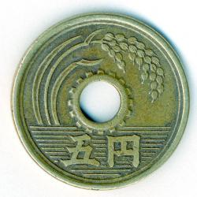
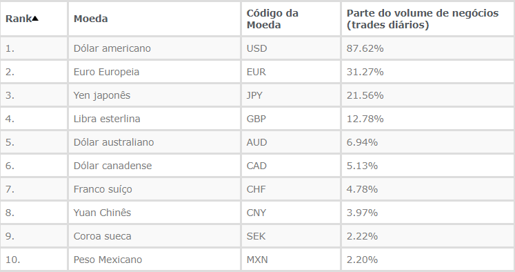
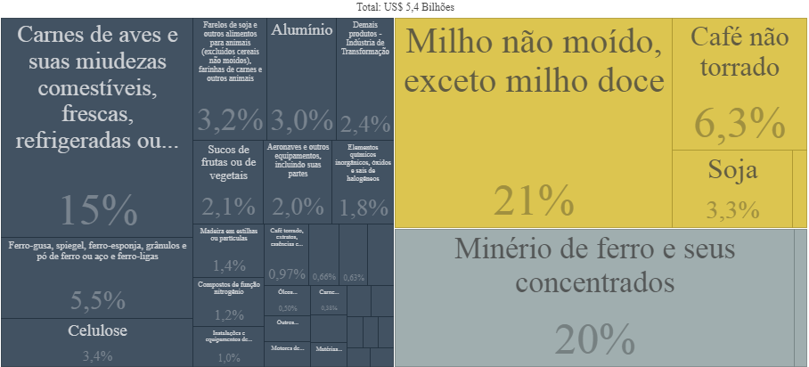
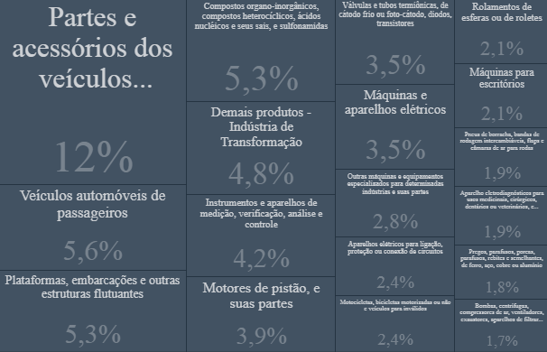

block
Iene
O iene ou yen, cujo símbolo é o ¥ e o código internacional JPY, é a moeda oficial do Japão desde 1871. Iene significa “objeto redondo” e a moeda é derivada da moeda chinesa “yuan” que possui o mesmo significado. Após a Segunda Guerra Mundial, o iene passou por um período de alta desvalorização e instabilidade, entre 1949 e 1971 os EUA fixou o valor de US$1 a 360 ienes, estratégia do Sistema Bretton Woods para estabilizar os preços na economia japonesa. O Iene não possui centavos como estamos acostumados a ver na maioria dos países, suas moedas são de 1, 5, 10, 50 e 100 ienes.
Na cotação atual onde US$1 é equivalente a R$5,62, US$1 é equivalente a aproximadamente 105 ienes (¥105). Mas isso não significa que o Iene seja desvalorizado, muito pelo contrário. O que acontece é que não se compra quase nada com ¥100 lá, é como se fosse R$1.
O Iene é amplamente utilizado como reserva financeira dos países por ser considerado um porto seguro para os investidores. O Japão possui sua taxa básica de juros negativa e alto superávit comercial, trazendo estabilidade econômica. O Iene está em terceiro lugar dentre as moedas mais negociadas do mundo pelas instituições financeiras, confira o top 10:
O “Real” se encontra na 19ª posição com 1% de volume negociados diariamente.Porém, com os efeitos da pandemia, o Japão sofreu a pior recessão econômica da sua história no segundo trimestre desse ano. Dados mostraram que a economia encolheu 7,8% em relação aos 3 primeiros meses do ano, uma queda anual projetada de 27,8%. O consumo dos japoneses despencou 8,2% e as exportações diminuíram quase 20%. Então, podemos esperar por mudanças no novo cenário pós crise, algo que não será maléfico apenas para a economia japonesa, mas em todo o mundo. Tanto que até a economia dos Estados Unidos encolheu ainda mais que a do Japão nesse período, assim como algumas europeias.
O Japão é um dos principais destinos dos imigrantes brasileiros, dados de 2018 do Relatório Internacional de Migração do Departamento de Assuntos Econômicos e Sociais da Secretaria das Nações Unidas (Desa) apontaram que 12,8% dos brasileiros emigrantes viviam no Japão, perdendo apenas para os Estados Unidos que liderava com 22%. E a recíproca também é verdadeira, visto que depois dos portugueses, os japoneses são a maior quantidade de estrangeiros que vivem em nossa terra, sendo o Brasil a maior colônia nipônica fora do Japão, mais precisamente no Bairro Liberdade em São Paulo.No Comércio Exterior, o Japão também é um importante parceiro sendo em 2019 o 5º principal destino das nossas exportações. No ano passado, o milho representou o produto brasileiro de maior relevância nas importações japonesas, seguido do minério de ferro, carnes de aves e diversos produtos como:
Quanto à importação de produtos japoneses, no ano passado foram US$4,1 bilhões, sendo quase que a totalidade produtos da indústria de transformação como automóveis e suas partes, plataformas flutuantes, dentre outros:
Mais que essas importantes relações comerciais citadas, Brasil e Japão são parceiros diplomáticos oficiais desde a assinatura do Tratado de Amizade, Comércio e Navegação em 1895. Apesar do rompimento entre 1942 e 1952 devido à Segunda Guerra, desde então os países buscam melhorar as relações através de visitas oficiais de representantes do governo buscando estreitar os laços e beneficiar ambos os lados.